flowchart LR A(Goals and Intro) --> B(Introduction to Tools) B --> C(Good Practices) C --> D(Example Development) style A fill:#612561
Workshop: Developing Research Software
Sebastian G. Mutz
Roadmap
- Who and what is this (not) for?
- A note on software literacy among researchers.
Disclaimer
- I will assume some basic experience with coding.
- The aim is to only raise awareness of some key practices; tutorials are outside scope.
- Developer teams for large codebases (e.g., ICON) have more to consider than what is presented here.
- For brevity, only few examples of tools and services are shown.
Goals for today
Help you increase research software sustainability and impact by adopting good development practices.
Signpost useful tools and services beyond IDEs and debuggers. (You can’t look for/into something if you’re unaware of its existence.)
Demonstrate some aspects of it with an example.
The state of research software
- Often closed source, no licence, documentation, distribution mechanism, etc.
- Software often developed and used for single project, then abandoned.
- Grant schemes just to address these issues (e.g., by the Software Sustainability Institute)
Software literacy among researchers
“I need [insert random software package, specific IDE, expensive licence, etc.] to create good software.”
[Many students and ECRs]
Good software …
- addresses real (research) need.
- is well designed, tested, and reliable.
- is well documented and maintainable.
- is developed with/for the community/users (adheres to standards, clean API)
- has mechanisms for the above.
- … is open.
Software literacy among researchers
“If your LLM gets code from open GitHub repositories, there are no concerns. They are public, so you’re allowed to do anything.”
[Convener in computational EGU session]
Software literacy among researchers
“If your LLM gets code from open GitHub repositories, there are no concerns. They are public, so you’re allowed to do anything.”
[Convener in computational EGU session]
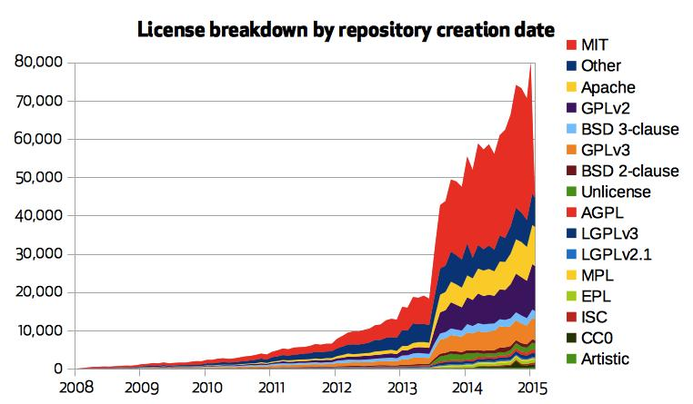
Researcher understand plagiarism and intellectual property for research (articles), but often fail to acknowledge this for software.
Software literacy among researchers
“Open-source software (OSS) is a second-class budget copy of proprietary equivalents.”
[Many colleagues; paraphrased]
OSS is backbone of global digital infrastructure and leads innovation; others usually follow/take from it (e.g., MacOS).
Some facts and figures [Hoffman et al., 2024]:
- OSS included in 96% of all codebases.
- OSS has economic value of 8.8T USD.
- Without OSS, 3.5x more would have to be spent on development.
Roadmap
flowchart LR A(Goals and Intro) --> B(Introduction to Tools) B --> C(Good Practices) C --> D(Example Development) style A fill:#616161 style B fill:#612561
Good practice supported by common tools:
- Git, code hosting
- Managing environments
- Language servers
- Linters
- Documentation tools
- Distribution and automatic deployment
Git – it’s not black magic
git is a distributed version control system; an automated way to organise and track different versions of a software, where the complete codebase mirrored on the developer’s computers.
Basic use examples:
git add [file or directory]adds new or changed content to indexgit commit -m "description of changes"records changes to the code repository with a messagegit pushupdates your remote repository (e.g., on GitHub or Codeberg)git pullfetches update from remote repository
Git GUI Clients
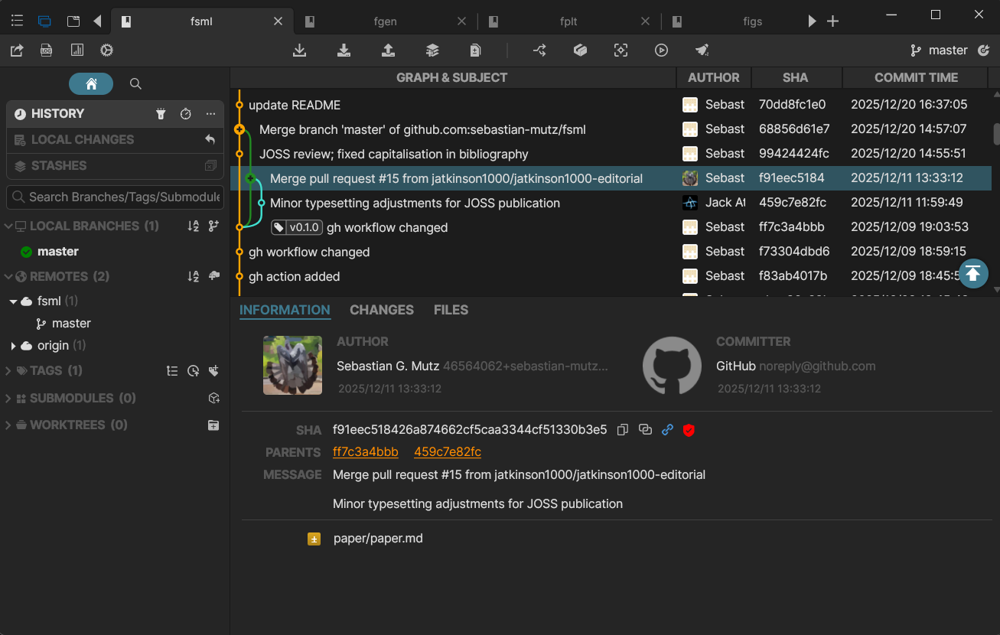
SourceGit – and open-source git GUI client.
Hosting your code repository
GitHub
- very widely used platform
- lots of templates, but also gets bloated
- bought by MS, so MS services are pushed and MS will use your data/code (just-telling-it-how-it-is™)
Codeberg
- non-profit and community-driven
- specialising in open-source services
- GDPR compliant and hosted in EU
Environment management
conda
- open-source and mature
- installs pre-compiled binaries
- lots of libraries available through conda-forge
spack
- open-source and mature
- compiles on your computer
- can build, install, and manage multiple versions of libraries without breaking other installations
- more flexible, finer control (popular for development for HPC)
Language Servers: helping you code
- Language Servers are background processes that provide code editing features like auto-complete, error checking, and more. Can be enabled for specific languages in your editors.
- Decoupled from IDE code; can use language servers for various languages in same IDE.
Linters: keeping your code clean
- Linters are static code analysis tools that enforce style and formatting conventions, and flag “suspicious” parts of your code.
- Examples:
- Fortran: Fortitude
- R: lintr
- C/C++: cpp-linter
- Python: Ruff
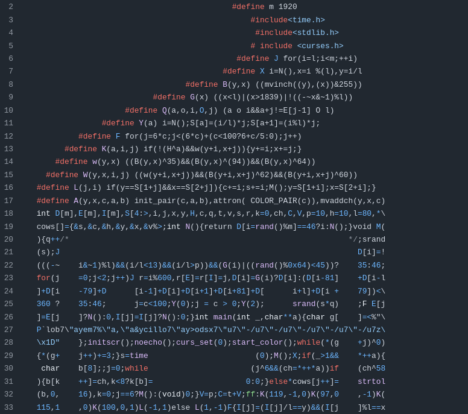
Distribution
Making it easy for others to use your software.
- Rust: Cargo
- Fortran: FPM (Fortran Package Manager)
- R: CRAN (Comprehensive R Archive Network)
- Python: pip/PyPI (Python Package Index)
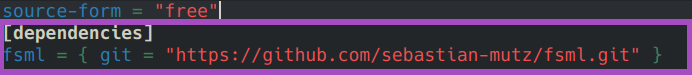
Automatic Documentation
FORD
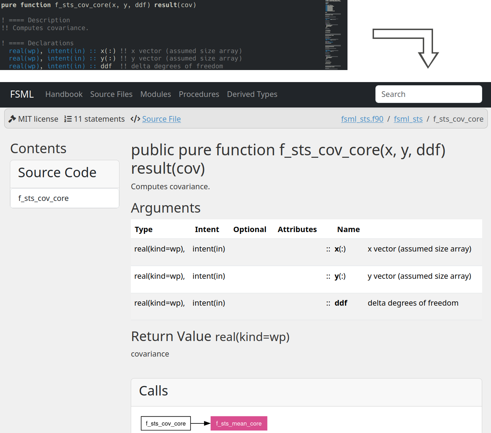
Fortran.Automatic Documentation
Automated deployment
- Using tools that will automatically release code changes (going from development environment right to end users).
- Example: This presentation takes advantage of GitHub pages; when the repository for this presentation is updated, the changes to this web presentation are automatically released.
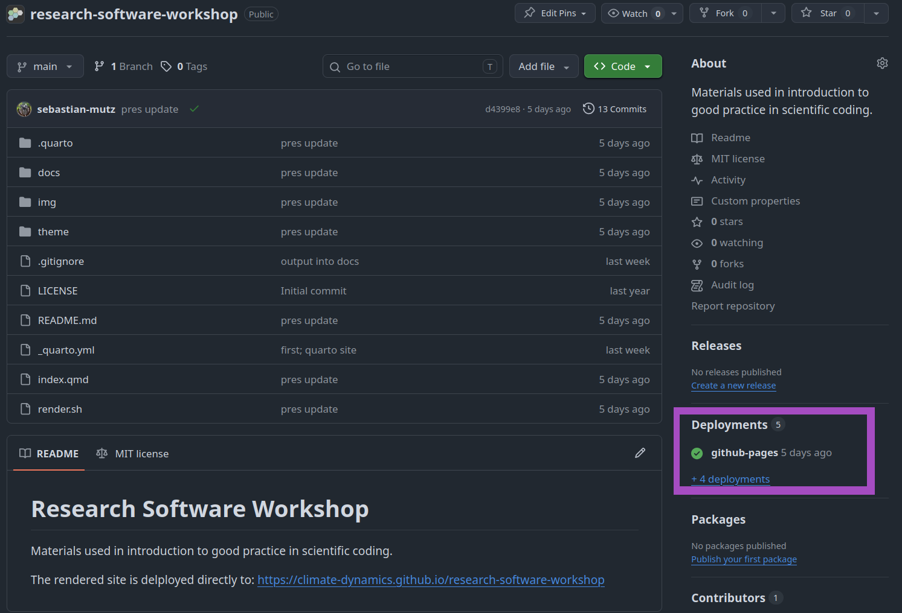
Automated deployment
Let’s try.
Tobias: When you need a witty remark, none is forthcoming.
Roadmap
flowchart LR A(Goals and Intro) --> B(Introduction to Tools) B --> C(Good Practices) C --> D(Example Development) style A fill:#616161 style B fill:#616161 style C fill:#612561
General good practice beyond technical tools:
- API design and semantics
- Documentation and user guide
- Involving community
- Increasing software visibility (in academia)
API (Application Programming Interface) design
A good API is easy to read and understand (semantically meaningful), complete and concise, and difficult to misuse. The same is generally true for procedure naming.
Example
rinc(rf)
- hard to understand; unclear what procedure is or arguments are.
s_river_incision(rainfall_rate)
- indicator of type of procedure (
s_for subroutine) - clearly, river incision is happening
- rainfall rate is passed as an argument - difficult to pass some other variable
Beyond automatic documentation
Documentation tools like sphinx or FORD let you enhance the automatically generated documentation with user guides and additional pages (generated from simple markdown or rst text files).
Good API documentation
- explains underlying theory (e.g., stream power law)
- uses equations (
latexusually supported by doc tools) - specifies input and output exactly - dimensions, data types, and what it is (e.g.,
rainfall_rate- scalar of type real64; mean annual rainfall rate)
User Guide
- where/how to get the code?
- what are the dependencies?
- how to install the library and dependencies?
- how to use it in your project?
- lots and lots of examples!
Involve Community
- make your repository visible
- decide on a licence (so users and contributors know what they can do with/to the software)
- create a contributor guide with style guidelines
- create a mechanism/guide for collecting feedback (e.g., GitHub issue templates)
- create a code of conduct for a healthy and friendly community
- engage with the community
Visibility and acknowledgement
Geoscientific Model Development (GMD)
- open-access and community-driven
- transparent, but conventional review process (focuses more on article than code)
- full length articles and potential duplication of work (if you already have good documentation)
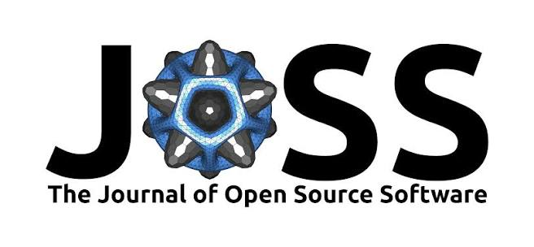
Journal of Open Source Software (JOSS)
- open-access and community-driven
- transparent, fast, and developer friendly review (focuses also on code and documentation)
- short articles; signposts the documentation and work you have already done
Roadmap
flowchart LR A(Goals and Intro) --> B(Introduction to Tools) B --> C(Good Practices) C --> D(Example Development) style A fill:#616161 style B fill:#616161 style C fill:#616161 style D fill:#612561
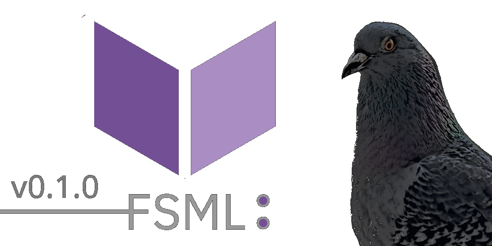
Development journey: How to turn your research code into a well-organised library?
FSTAT: Old research toolbox

- 15+ years of code development lived on my computer(s)
- LAPACK compiled and linked manually
- manual building and linking of fstat required
- no documentation; just code comments and a README
- useful only for me
A new Fortran ecosystem and community
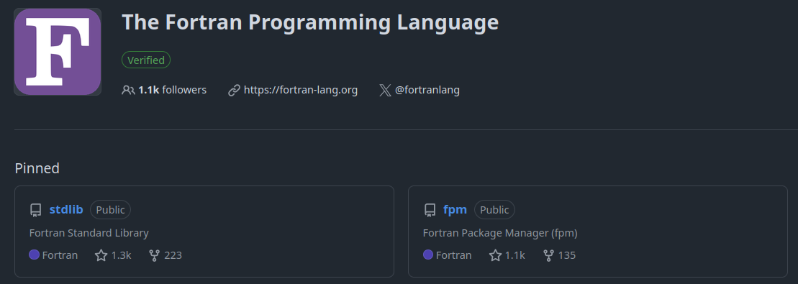
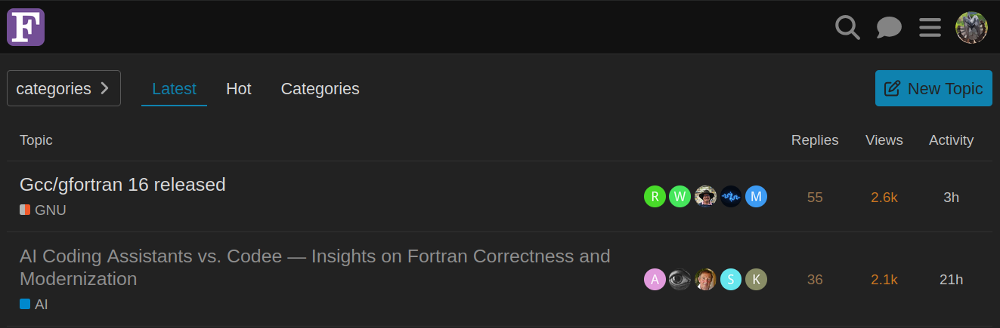
fpm
Fortran Package Manager makes building, running, and distributing Fortran projects hassle-free.
stdlib
The new standard library includes many useful procedures and includes modern lapack interfaces.
“Perhaps it’s worth modernising and opening up my toolbox?”
New structure and dependencies
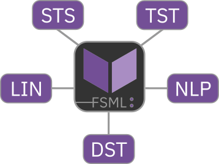
New API and consistent style
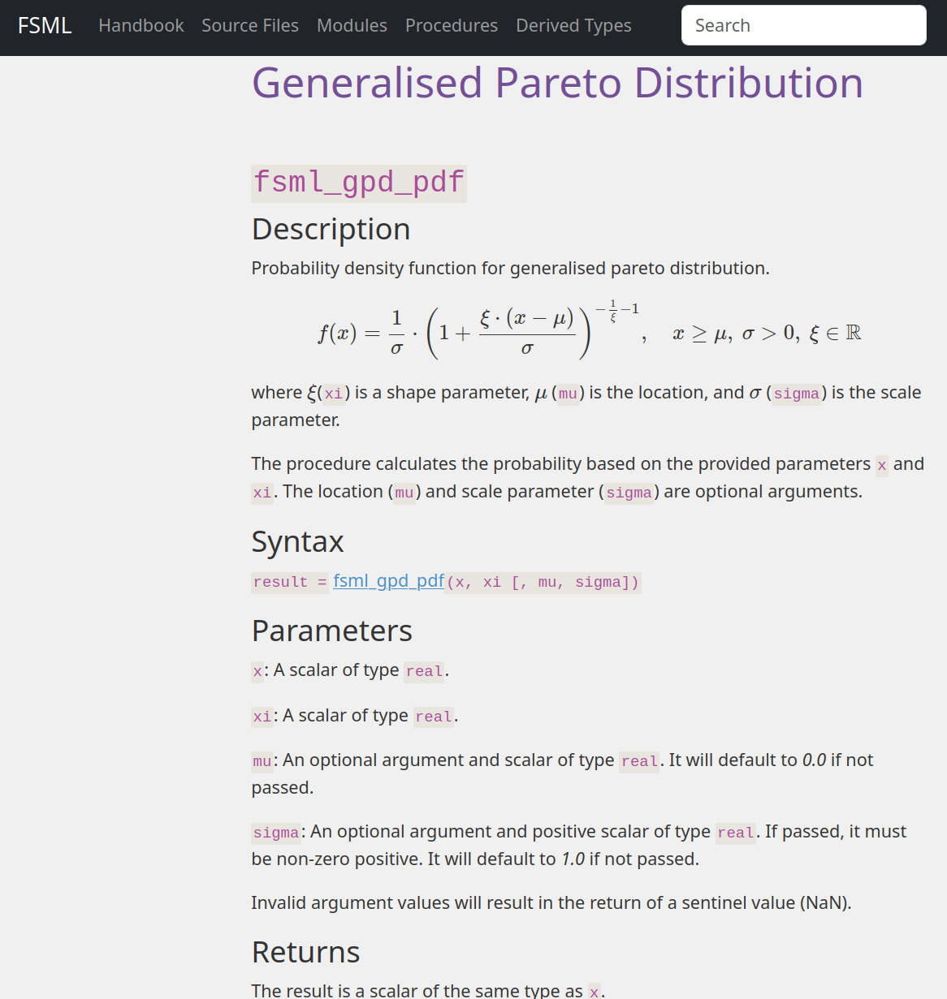
- internal procedure names: procedureType_module_procedure_suffix (e.g.,
s_dst_gpd_pdf_corefor pure procedure ands_dst_gpd_pdffor impure wrapper) - API (through interface module): fsml_procedure (e.g.,
fsml_gpd_pdf); explicit and avoids name conflicts
Documentation (API and Handbook)
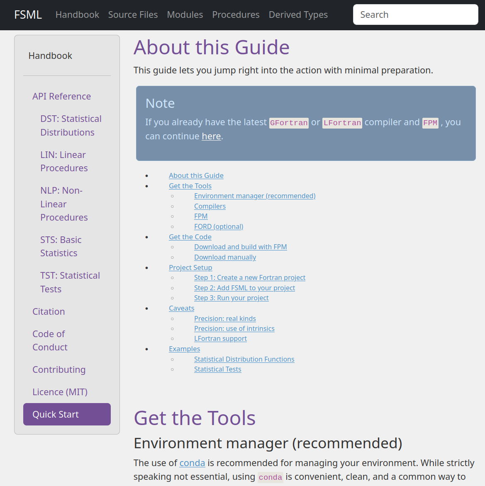
- API documentation (previous slide)
- Quick Start tutorial
- Visible license, and citation instructions for users and contributors
Documentation (API and Handbook)
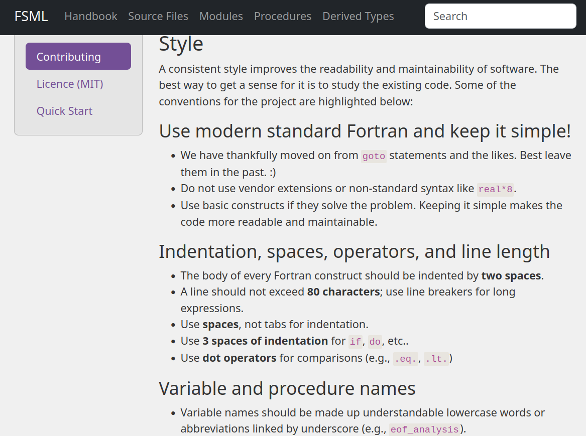
- Contributing guidelines (style guide, conventions, instructions for raising issues, etc.)
- Code of Conduct (adapted from the Contributor Covenant, version 2.0); community impact guidelines inspired by Mozilla’s code of conduct.
Software Visibility
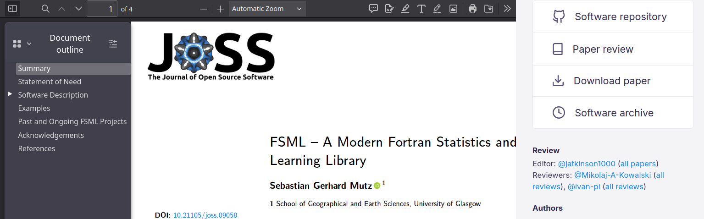
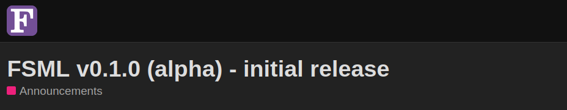
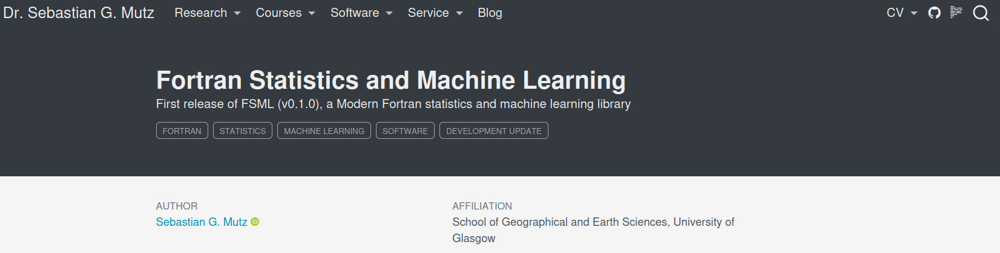
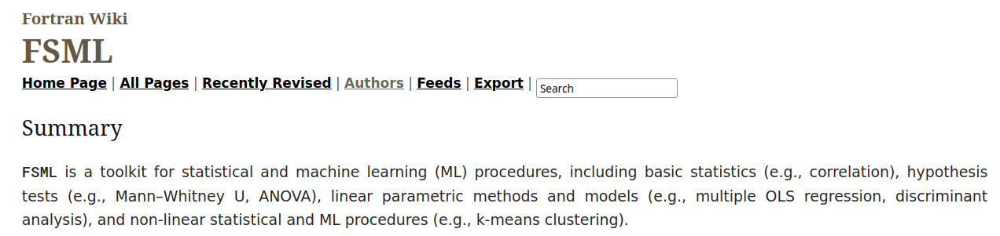
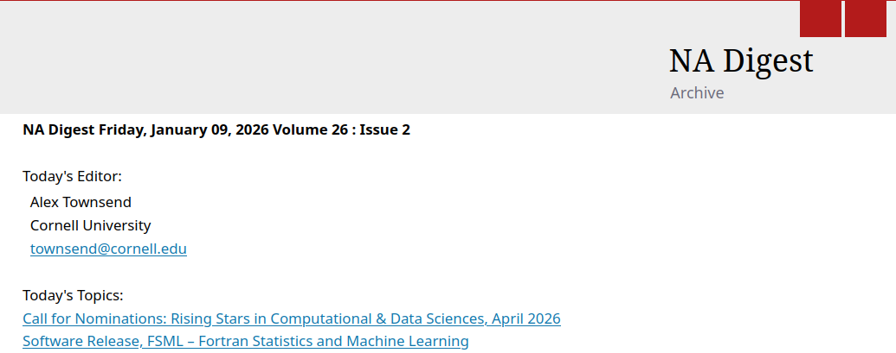
Engagement, use, and prospects
- early adoption for research (drought prediction)
- lowered barrier for students interested in Fortran
- new contributor days after release
- researchers at NCI (National Computational Infrastructure) Australia consider adoption and contribution
- proposals resulted from community engagement
- another reference for new statistics procedures in stdlib
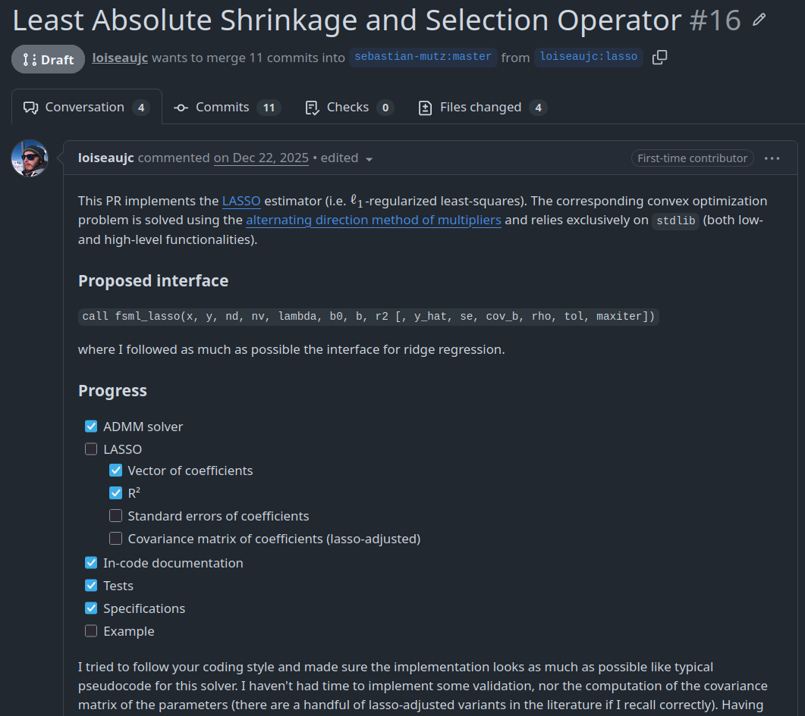
The future …
- rework and add more procedures from fstat (e.g., Random Forests)
- add ML utilities to lower barrier for ML model development
- develop further as needed by research
- optimise further for parallel execution
- make the library usable in jupyter notebooks to lower barrier further …
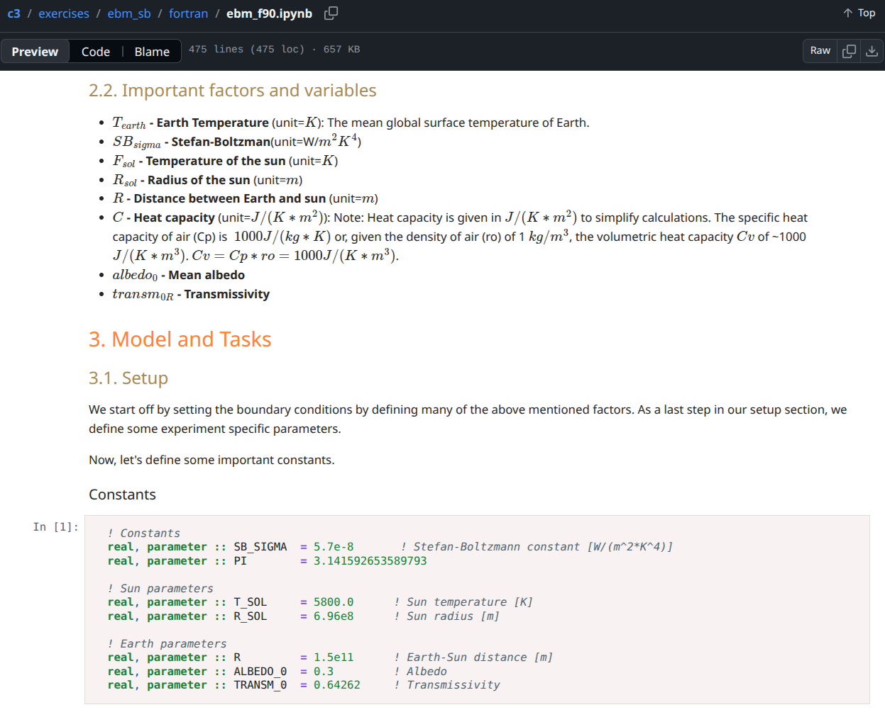
References
- Balter, Ben (2015; updated 2021) “Open source license usage on GitHub.com”, GitHub Blog. Link
- Hoffmann, Manuel, Frank Nagle, and Yanuo Zhou (2024) “The Value of Open Source Software.” Harvard Business School Working Paper, No. 24-038.
- Mutz, S. G., (2025). “FSML – A Modern Fortran Statistics and Machine Learning Library”. Journal of Open Source Software, 10(116), 9058, https://doi.org/10.21105/joss.09058
Fin
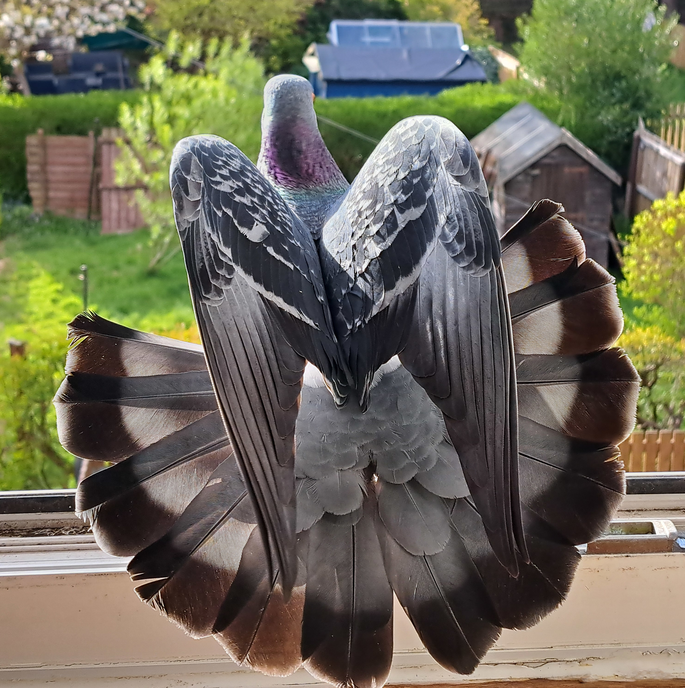
“Yes, I’m aware of the legend Herbert.”
(Syed Danish Ali, July 2025)
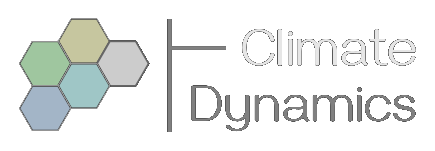
CC-BY, Sebastian G. Mutz